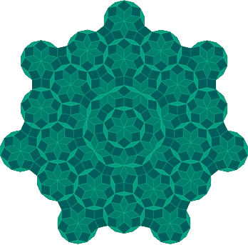

HeyArya!
A math tutor that helps students work through an idea instead of handing over the answer.
9,000+ views100 active learners9 countries
Try HeyArya! ↗
HeyArya!A math tutor that helps students work through an idea instead of handing over the answer.
A teacher’s handwritten note became a practical guide for more active, experiential classrooms.
With teachers, I helped build a nine-module CAS guide aligned with NEP 2020. Each module moves from an idea to a classroom activity and then reflection, with creativity, activity, and community engagement at its center. We took the guide into more than five schools and STEAM labs and ran workshops with teachers.


My assistive-technology work includes two wearable communication systems and a tactile navigation stick, each with a separate patent application: 202611103635, 202611103628, and 202611120625. At Saksham, I also led 50 volunteers on mentoring programs and school systems across government-school partners.
The work reached more than 300 students across 10 schools. In school use, the navigation stick reduced average corridor navigation time by 60%. I raised $1,200 to equip a science lab at a partner school.


Smart glasses that turn printed text and lip-read speech into tactile Morse-code messages.
A scene classifier switches between text recognition and visual speech recognition. The glasses send recognized words through temple vibrations, with adaptive Morse-code pacing and priority handling for urgent messages.
Application No. 202611103635A cap-based visual communication aid for deaf and hard-of-hearing users.
The application describes lip-reading alongside visual emotion cues, with information delivered through haptic alerts and optional bone-conduction audio.
Application No. 202611103628A cane that communicates object type, distance, and direction through haptic zones in the handle.
The application describes camera and depth sensing, object prioritization, and distinct alerts for ground-surface hazards.
Application No. 202611120625An internship exploring early-stage companies and venture capital.
I’m interested in how promising ideas become durable organisations, and how founders find the people and resources to help them grow. This experience gave me a chance to see that work from inside a venture capital team.
A separate project recognized with the IIT KGP YIP Grand Prize in 2024.
Outside the project list
I’ve led the Math team at Zenith and a 40-student team for a three-day STEM fair. Through Paradox, my school’s tech club, I’ve worked with a 60+ member community on LLM projects, computational thinking, and programming workshops.
I captain the U14 chess team and earned an approximately 1500 FIDE classical and rapid rating at age ten. In athletics, I qualified for the U19 SGFI National Championship at 14, placed second at the U17 state level, and won two U14 SGFI district and block championships. I also play guitar and completed Grade 8 through Rockschool.
A little more about me ↗